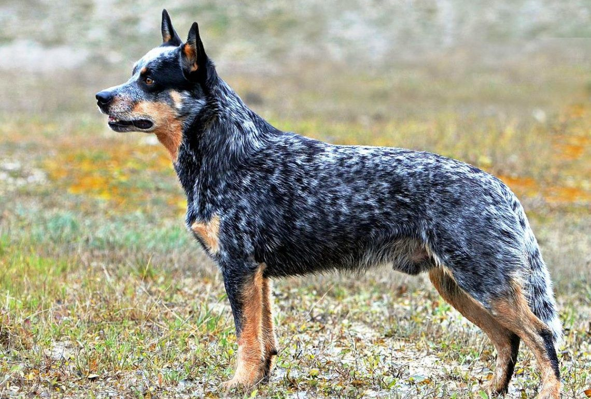
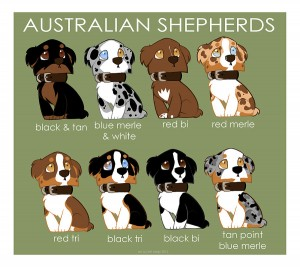

<body background="fondo2.jpg"></body>
<font face="Century Gothic" size="3" color="black">
          <center><h1>PASTOR AUSTRALIANO</h1></center>
    </font>
   </body>
   <style>
    body {
        .image-column img{
            max-width: 350px;
            margin: 5px auto;
        }
    }
</style>
   
   <table width="100%" style="Color: rgb(53, 44, 16)";>
       <tr>
           <td><b>Beneficios de tener un pastor australiano</b></td>
           <td>
               <ul>
                    <li><b>Excelente Compañero de Ejercicio: Su energía y resistencia los convierten en el compañero perfecto para actividades al aire libre.</b></li>
                    <li><b>Altamente Inteligente: Fácil de entrenar y siempre dispuesto a aprender nuevas habilidades.</b></li>
                    <li><b>Lealtad Inquebrantable:Forman fuertes lazos con su familia y son protectores naturales.</b></li>
                    <li><b>Gran Compañero Familiar: Son amigables y se llevan bien con niños y otros animales.</b></li>
               </ul>
           </td>
           <td class="image-column" style="width: 40%;">
            
       </tr>
       <tr>
           <td><b>Colores del Pastor Australiano</b></td>
           <td>
               <ol>
                    <li><b>Merle Azul</b></li>
                    <li><b>Merle Rojo</b></li>
                    <li><b>Negro Tricolor</b></li>
                    <li><b>Rojo Tricolor</b></li>
               </ol>
           </td>
           <td class="image-column" style="width: 40%;">
            
       </tr>
       <tr>
           <td><b>Cuidado del pastor australiano</b></td>
           <td>
               <dl>
                   <dt><b>Ejercicio Diario</b></dt>
                   <dd><b>Necesita al menos 1-2 horas de ejercicio intenso diario para mantenerse saludable y feliz.</b></dd>
                   <dt><b>Alimentación</b></dt>
                   <dd><b>Una dieta balanceada y adecuada para perros activos; preferiblemente alimento rico en proteínas.</b></dd>
                   <dt><b>Cuidado del Pelaje</b></dt>
                   <dd><b>Requiere cepillado regular para evitar enredos y mantener el pelaje en buenas condiciones.</b></dd>
                   <dt><b>Entrenamiento</b></dt>
                   <dd><b>Altamente inteligente, necesita estimulación mental continua a través de diversion o atención.</b></dd>
               </dl>
           </td>
           <td class="image-column" style="width: 40%;">
            
       </tr>
   </table>